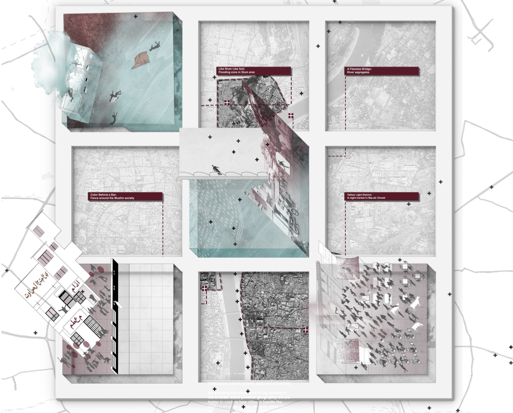

Home
About
Work
Essay
I write
about computational and assistive tool, social sustainability, environment, and urban politics
proceedings of the ecaade 2024 Conference Theme: DATA-DRIVEN INTELLIGENCE
by K. Kuo, Y. Liu
Tactile Painting ASSISTIVE TOOLBOX FOR VISUAL IMPAIRMENT
read more

ARQ ｜ 21F
by Y. Liu,Ebersol, E. A., & Soyka, E.
Recasting the Gandhian Urban Legacy in the Indian City: Nature, Alterity, and Activism.
read more
Housing Policy Debate (RHPD)
by Pimentel Walker, A. P., Arquero de Alarcón, M., Yelk, J., Nair, R., N., & Liu, Y.
Young Land Occupations and the Failure of Housing Policy in Brazil
read more
Harvard Zofnass Conf｜ 21F
Liu, Y.
Decarbonization and Synergetic Industrial Design
read more
FORA on the Urban, Issue #0.
Liu, Y.
Refracted Reading of Practices: Black Lives Matter Mural/Plaza, Washington D.C.
read more